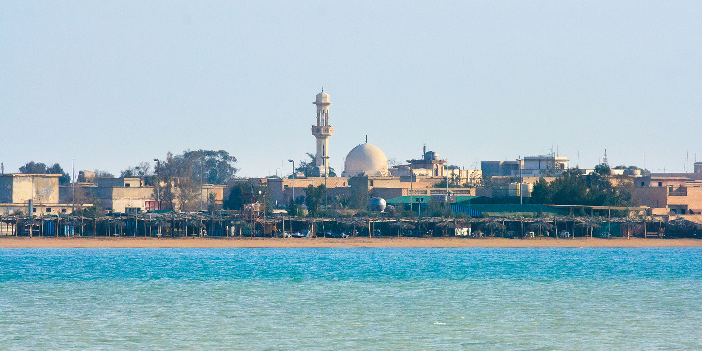
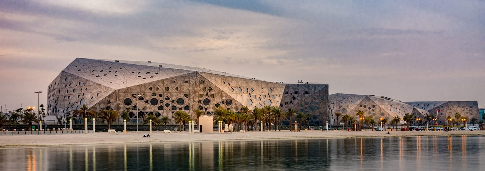

Step into the grandeur of The Avenues Mall, Kuwait’s crown jewel and the second-largest shopping destination in the
Persian Gulf region. Since its grand opening in April 2007, inaugurated under the patronage of the Emir of Kuwait,
Sheikh Sabah Al Ahmed Al Sabah, this iconic mall has set the standard for luxury and innovation in retail. Spanning
a staggering 1.2 million square meters, The Avenues is more than just a shopping center—it’s an experience.
Recognized with the prestigious ICSC Gold Award for Expansion and Design in the Middle East and North Africa, this
architectural masterpiece boasts over 1,400 stores that cater to every taste and style. Whether you’re hunting for
high-end fashion, savoring global cuisine, or simply soaking in the vibrant atmosphere, you’ll find endless options
here. The mall also offers parking for 17,000 cars, ensuring convenience even on the busiest days. Don’t miss the
chance to visit one of the world’s largest malls and immerse yourself in the ultimate blend of luxury, leisure, and
world-class shopping.
Just 20 kilometers off the coast of Kuwait City, Failaka Island is a captivating blend of history and natural beauty. Thought to derive its name from the Greek word fylakio(n), meaning "outpost," this island has been a strategic hub for thousands of years, dating back to the rise of the ancient Sumerian city-state of Ur. Positioned 50 kilometers southeast of where the Tigris and Euphrates Rivers meet the Gulf, Failaka has long been prized for its role in controlling lucrative trade routes. Until the Gulf War, it was Kuwait’s longest continuously inhabited site, rich with cultural and archaeological significance. Today, visitors can explore the island’s storied past while enjoying its serene coastal landscapes, making it a must-visit destination for history enthusiasts and nature lovers alike. 
Discover the soul of Kuwait at Souq Al-Mubarakiya (سوق المباركية), a historic market in the heart of Kuwait City that has been bustling with life for over 200 years. One of the country’s oldest and most treasured landmarks, this traditional souq was a hub of commerce long before the discovery of oil transformed Kuwait’s economy.
Nestled between Abdullah Al-Mubarak, Abdullah Al-Salem, and Palestine Streets, Souq Al-Mubarakiya is a vibrant blend of history and culture. Though it was damaged during the 1990 Iraqi invasion, the souq was lovingly restored, maintaining its authentic charm and traditional appeal.
Wander through its maze of stalls to find treasures like Persian silk carpets, oud perfumes, gold and silver jewelry, and traditional Kuwaiti garments. Sample the region’s flavors with dates, honey, spices, and fresh produce, or explore local history at the souq’s two small museums: Sheikh Mubarak Kiosk and Kuwait’s first pharmacy, both offering free admission.
The courtyard near Masjid Al-Bahar (Sea Mosque) is a must-visit, with traditional cafés serving tea brewed over coals and restaurants dishing out mouthwatering Arab and Persian cuisine in an open-air setting. On hot days, cool off under a refreshing mist while enjoying shisha or letting the little ones play in the nearby children’s area.
Despite a massive fire in March 2022 that damaged many shops, Souq Al-Mubarakiya remains a cherished symbol of Kuwait’s enduring spirit. It’s more than a market—it’s an unforgettable glimpse into the country’s rich heritage

Rising above the Persian Gulf, the Kuwait Towers are a modern symbol of Kuwait City. Opened in 1979, the three
towers combine functionality and beauty, with the main tower featuring a rotating restaurant and café that offers
breathtaking 360-degree views while you dine—without ever stopping its gentle spin.
Designed by Danish architect Malene Bjørn, the towers are adorned with 41,000 enameled steel discs in shades of
blue, green, and gray, echoing the domes of historic mosques. The second tower serves as a water tower, and the
third houses illumination equipment that lights up the skyline.
Despite damage during the 1990 invasion, the towers have been fully restored and remain a must-visit landmark,
blending history, innovation, and unforgettable experiences.

The Sheikh Jaber Al-Ahmad Cultural Centre (JACC), also known as the Kuwait Opera House, is a cultural masterpiece and the largest of its kind in the Middle East. Opened in 2016, this striking complex hosts an exciting program of music, theatre, film, workshops, and spoken-word events, making it a must-visit for culture enthusiasts. The center’s four iconic buildings, adorned with thousands of titanium panels, blend Islamic design motifs with sleek modern architecture. Beyond its visual splendor, the 214,000-square-meter space includes theatres, concert halls, exhibition spaces, cinemas, libraries, and a stunning public park complete with an interactive water fountain and diverse eateries. Located along Gulf Road in Kuwait City, JACC is part of the Kuwait National Cultural District, offering something for everyone year-round. Stroll through the grounds, catch a performance, or simply soak in the grandeur of this cultural hub. 